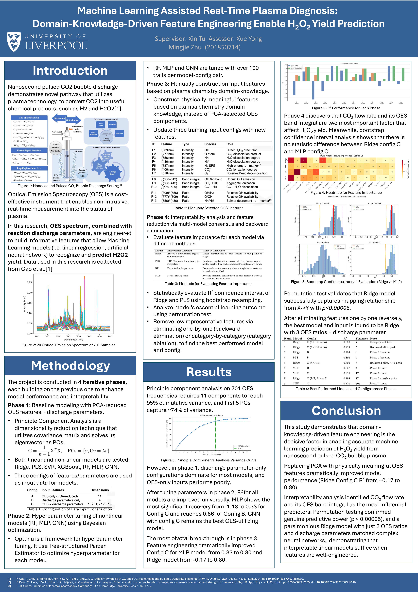

ML-Assisted Real-Time Plasma Diagnosis
A machine learning pipeline that predicts H2O2 yield from optical emission spectroscopy (OES) in nanosecond pulsed CO2 bubble discharge. The project progresses through four phases — baseline PCA modelling, Bayesian hyperparameter tuning (Optuna TPE), domain-knowledge-driven feature engineering, and interpretability analysis (SHAP, permutation testing, bootstrap CI) — demonstrating that physically meaningful OES features dramatically outperform PCA-reduced components (Ridge regression on combined OES + discharge inputs: R² from −0.17 to 0.80).